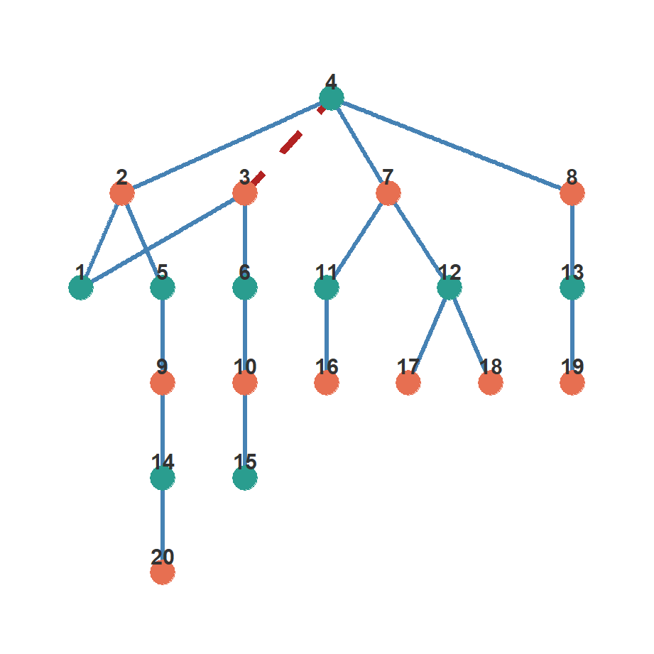
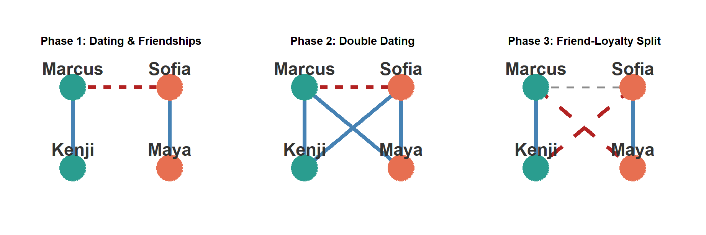
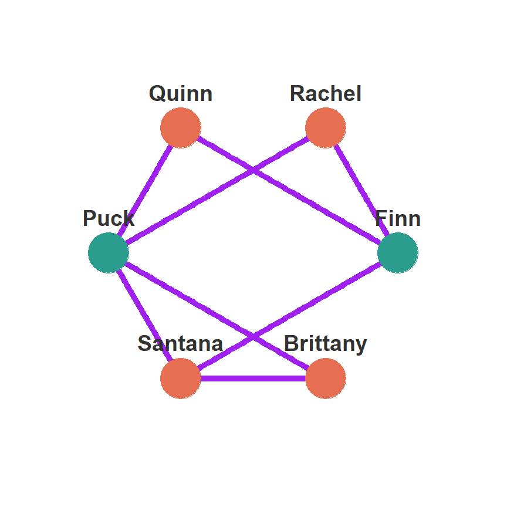
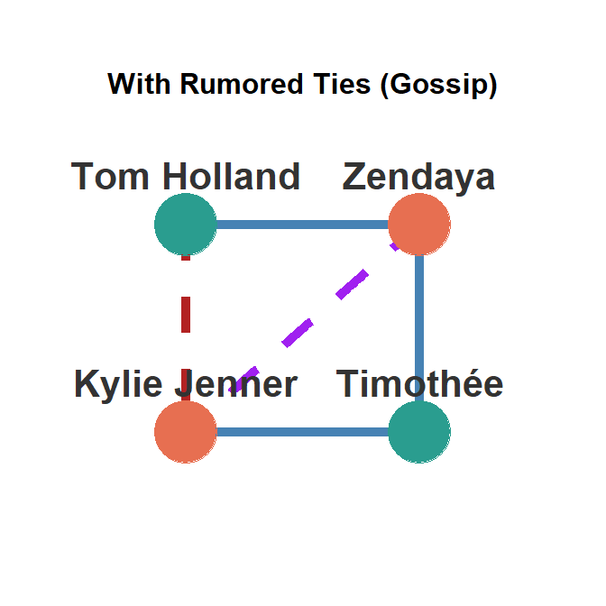

Chains of Affection
How Local Norms Shape Romantic and Sexual Networks
Part 1: The Macro-Micro Mystery
Why Study Romantic & Sexual Networks?
- The Closed Laboratory:
- Unlike abstract communities, school-based dating and sexual networks are bounded settings with high social visibility.
- Individual relationship preferences are intimate, dyadic choices, but when aggregated, they form a global network structure.
- The Core Paradox:
- Individual actors have zero awareness of the global structure.
- No adolescent says: “I will date this person to maximize network centralization.”
- Yet, by following simple, local micro-level rules, individuals generate elegant, system-wide macro-level patterns.
Macro-Structures & Disease Diffusion
- The Stakes of Topology:
- The path layout of a network determines how rapidly pathogens (like STIs/HIV) can travel.
- The Core Model: Densely connected clusters or pockets of high-risk actors. Highly resilient to intervention.
- The Spanning Tree: Long, thin, fragile chains with very few shortcuts (cycles). Extremely vulnerable to random interventions.
- The Micro-Macro Link:
- By understanding the unwritten local rules of adolescent society, we can predict—and break—the path of disease transmission.
Part 2: Bearman’s Landmark Study (Jefferson High)
The “Chains of Affection” Discovery
- Peter Bearman, James Moody, and Katherine Stovel (2004):
- Conducted a landmark study of “Jefferson High” (832 students).
- The Global Finding:
- Found a massive spanning tree structure!
- Over 52% of active students were linked in a single giant, chain-like component.
- It had almost zero cycles (redundant loops), resembling rural telephone wires stretching from a single main trunk.
- Why is this a puzzle?
- Standard social preferences like homophily (dating similar people) predict highly clustered, dense, closed pockets—not long, fragile chains!
Spanning Tree Chain
The 4-Cycle Proscription: The Tabooed Loop
- The Micro-Level Proscription:
- “You do not date your ex’s current partner’s ex” (avoiding seconds partnerships).
- Completing this loop results in a public loss of status. Adolescents avoid taking “seconds” to protect their prestige in the peer group.
- Bearman et al. found only two 4-cycles in the entire school, vastly fewer than expected by random chance.
. . .

- Time 1: Mateo dates Priya, while Devin dates Mei.
- Time 2: After breakups, Priya and Devin start dating.
- Time 3: Should Mateo and Mei date? If they do, they complete the forbidden 4-cycle loop and both take “leftovers.” So they avoid each other!
The Power of a Negative Rule
- Spanning Trees are Born from Proscriptions:
- Spanning trees (chain-like structures) are not generated by positive choices, but by negative rules (what you cannot do).
- Like incest taboos in kinship networks, the prohibition against completing short cycles forces individuals to look outward.
- The Spanning Result:
- By refusing to close the loop, Mateo and Mei must find partners outside their immediate circle.
- This simple choice stretches the network out into long, fragile chains.
- Forcing Mateo and Mei to look outward stretches the tree!
Part 3: Peer Context & The Friendship-Dating Code
“Keeping to the Code” (McMillan et al., 2022)
- The Critique of the Classic Taboo:
- McMillan, Kreager, and Veenstra (2022) argue that Bearman’s norm lacks face validity.
- No high schooler actually thinks in terms of: “Is this my ex-partner’s current partner’s ex-partner?”
- It is too abstract and unarticulated.
- The Alternative Multi-Relational Norm:
- Romantic relationships are embedded in a dense peer friendship network.
- The actual micro-level rule is: The “No Seconds” Friendship Code (colloquially, “Girl Code” or “Bro Code”).
- “Do not date your friend’s previous romantic partner.”
Visualizing the Friendship Code Process
- How same-sex loyalty blocks the 4-cycle loop step-by-step:

- Phase 1: Marcus (Boy) and Sofia (Girl) are dating (dotted), while Marcus is same-sex friends with Kenji (Boy), and Sofia is same-sex friends with Maya (Girl).
- Phase 2: Through double-dating (triadic closure), Marcus spends time with Maya, and Sofia spends time with Kenji, establishing friendly ties across the group.
- Phase 3 (Breakup): Marcus and Sofia split. Same-sex friendship loyalty prevails. Kenji will never date Sofia (his friend Marcus’s ex), and Maya will never date Marcus (her friend Sofia’s ex). The 4-cycle is blocked, fracturing the group into two open chains!
Empirical Evidence of the Code
- Testing the PEAR Study Network:
- McMillan et al. studied a Dutch high school romantic network (607 students).
- Adhered to Bearman’s spanning tree characteristics: exceptionally sparse (density = 0.005), low cycles (only 8 four-cycles total).
- Statistical Network Analysis:
- Using advanced statistical models to control for other factors (like popularity, school size, and opportunities), researchers found that the “no seconds” Girl/Bro Code is a powerful social rule.
- Adolescents are significantly less likely to date their friend’s ex-partner.
- In fact, once this friendship loyalty rule is accounted for, there is no other special dating rule needed to explain why 4-cycles are so rare!
- Takeaway:
- The global spanning tree is not born of a dating-only taboo, but of peer friendship loyalty blocking cycle closure!
Part 4: Reality vs. Fiction (The TV Cases of Glee and Grey’s Anatomy)
Do Fictional Networks Follow the Rules?
- Writers of popular television dramas (sitcoms, prime-time soap operas) rely heavily on romantic networks to build storylines.
- Let’s examine two famous fictional cases:
- Glee’s McKinley High (Seasons 1-2, studied by Jimi Adams, 2015).
- Grey’s Anatomy (GAN, Seasons 1-6, studied by Marcum et al., 2016).
. . .
- The Macro-Observation:
- In Glee, a whopping 42% of observed romantic ties are part of a 4-cycle loop (e.g., Quinn-Finn-Rachel-Puckerman).
- In Grey’s Anatomy, 4-cycles, love triangles, and overlapping loops are rampant.
- Why? Drama needs conflict! Writers actively violate local cycle-avoidance taboos to generate plot tension.
Glee’s McKinley High Network
- High-Clustering Drama:
- Glee’s network is incredibly small, highly dense, and saturated with loops.
- Screenwriters use cycle completions (e.g., dating a friend’s ex or partner’s ex) to drive dramatic friction.
- Statistical Network Models:
- When researchers used statistical models to control for basic features (like how small and active the cast is), the patterns showed a very interesting result.
- Fictional characters still exhibit a strong, significant aversion to 4-cycles.
- Even under dramatic television pressures, scriptwriters implicitly follow real-world sexual taboos to keep plots recognizable!
- Takeaway:
- Art imitates reality! Even under extreme dramatic pressures, writers implicitly follow real-world sexual taboos to keep plots recognizable.
Glee’s Saturated Loops

Part 5: Same-Sex Constraints (The L Word Case)
Heteronormativity vs. Homosexual Markets
- Marcum, Lin, and Koehly (2016) extended the study of 4-cycles to homosexual networks, comparing:
- Grey’s Anatomy (GAN): Predominantly heterosexual adult network.
- Showtime’s The L Word (LWN): Predominantly lesbian same-sex network in Los Angeles.
. . .
- The Structural Findings:
- Heterosexual networks (Grey’s Anatomy, and the real-world Colorado Springs gonorrhea network) show a strong, significant aversion to 4-cycles (they are heavily avoided).
- Homosexual networks (The L Word) show no such aversion to 4-cycles (they occur at normal, expected rates).
- Love triangles and cycles of length 4 are structurally unconstrained and socially permitted in the lesbian network.
Market Size and Structural Necessity
- Why are same-sex cycles different?
- 1. Structural Constraint:
- Same-sex dating markets are significantly smaller and more constrained than heterosexual markets.
- Due to limited partner availability, strict cycle avoidance (the “no seconds” code) would result in a massive proportion of the population being locked out of dating entirely.
- 2. Normative Shift:
- In lesbian same-sex networks, “love triangles” and cycle-closures are normalized.
- Gaps are closed out of structural necessity, making cycle-taboos a luxury of large, heteronormative dating pools.
Fictional Adult Networks
| Network Metric | Grey's Anatomy (GAN) | The L Word (LWN) |
|---|---|---|
| Size (Nodes) | 44 | 91 |
| Edges | 46 | 105 |
| Same-Gender Ties | 2 | 86 |
| 4-Cycles | 7 | 12 |
| Cycle Aversion? | Significant | None |
The Structural Impossibility of Heterosexual 3-Cycles
- What is a 3-Cycle?
- A closed loop of length 3 where person A dates B, B dates C, and C dates A (the classic “love triangle”).
- The Bipartite Rule:
- In a strictly heterosexual network, ties only occur between opposite sexes (Boy \(\leftrightarrow\) Girl).
- Therefore, heterosexual networks are bipartite graphs, which mathematically can only have even-length cycles (4, 6, 8, etc.).
- The Catch:
- A romantic 3-cycle is structurally impossible in a strictly heterosexual market!
- To close a 3-cycle, at least one same-sex (homosexual or bisexual) relationship is mathematically required.
. . .
- Left: Heterosexual triad. Closing the triangle would require Kenji and Marcus to date, which is impossible under strictly heterosexual rules.
- Right: Bisexual/same-sex triad. A same-sex tie (Marcus-Kenji, shown in purple) closes the triangle, creating a 3-cycle.
Part 6: Rumors vs. Reality (whosdatedwho.com Gossip Analysis)
Allegations of Affection
- Carmella Nicole Stoddard’s (2024) UCLA dissertation looked at a massive celebrity dating network scraped from whosdatedwho.com (WDW):
- 109,626 nodes and 88,746 edges across celebrity histories.
- The Core Distinction:
- Confirmed Ties: Fully established, mutually acknowledged relationships.
- Rumored Ties: Unconfirmed allegations, gossip, and media speculations (3,848 ties).
- The Question:
- How do rumored ties differ from confirmed ties structurally, and what do they tell us about social norms?
Visualizing Rumors vs. Reality
- Confirmed Structure:
- Only opposite-sex confirmed ties exist (Tom Holland \(\leftrightarrow\) Zendaya \(\leftrightarrow\) Timothée \(\leftrightarrow\) Kylie Jenner).
- Forms a clean, acyclic tree with zero cycles and strictly heterosexual behavior.
- Rumored Structure:
- 4-Cycle Closure: A rumor that Kylie Jenner dated Tom Holland (red dashed line) closes a 4-cycle loop.
- Discordant Sexuality: A rumor that Zendaya dated Kylie Jenner (purple dashed line) is a same-sex tie, suggesting bisexual behavior for both.


- Gossip highlights norm violations by closing cycles (red) and implying bisexuality (purple)!
Gossip as a Norm-Enforcement Tool
- The Tradeoff of Gossip & Rumor:
- Gossip is attracted to salaciousness (violations of cycle avoidance, sexuality discordant pairings, extreme age-gaps).
- By rumor-mongering these violations (completing 3-cycles and 4-cycles), the community publicly highlights and sanctions deviant behaviors.
- The WDW Findings:
- Rumored ties are heavily overrepresented in short cycles and age-gapped ties.
- Rather than being random noise, rumors are a multiplex tool used to enforce local monogamy and age-homophily norms by shining a spotlight on those who break them.
Part 7: Summary & Class Discussion
Summary of the Micro-Macro Romantic Link
- 1. Structure Emerges from Gaps:
- Spanning tree networks are not created by positive choices, but by negative proscriptions (avoiding short cycles).
- 2. Friendship Drives Romantic Structures:
- The “Bro/Girl Code” (avoiding dating a friend’s ex) is the true local engine that shapes adolescent spanning trees.
- 3. Market Size Decouples Norms:
- Smaller same-sex dating markets cannot afford cycle-avoidance taboos, showing how structural constraints alter social codes.
- 4. Gossip Maps Deviance:
- Celebrity rumor networks demonstrate that gossip serves to identify, broadcast, and sanction those who violate local network taboos.
Discussion Questions
- Why do you think friendship-loyalty norms (“Bro Code” / “Girl Code”) have higher face validity for teenagers than dating-only cycle-avoidance rules?
- If same-sex markets must relax cycle-avoidance taboos due to structural constraint, how might this impact the spread of infectious pathogens (STIs) within gay/lesbian communities compared to heterosexual ones?
- How does celebrity gossip on sites like whosdatedwho.com act as a “surveillant filter” for norm violations, and what other online communities use rumor as a tool for social control?